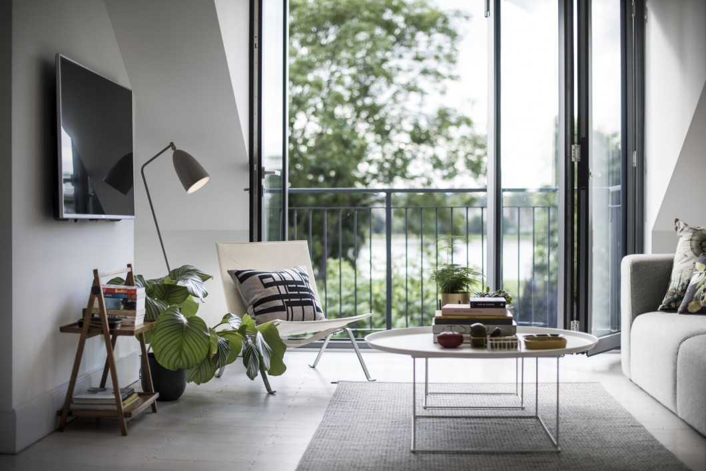

В данном разделе представлены основные направления и стили дизайна интерьера, такие как исторический, этнический и современный. Вы можете ознакомиться с их отличительными чертами и наглядными примерами каждого из стилей. Надеюсь, что данная информация будет вам полезна, и вы сможете подобрать подходящий именно вам стиль интерьера.
Ежегодно модные тенденции в творческих сферах обновляются, обретая новые формы и направления – и дизайн интерьера квартир не стал исключением. Изучение модных трендов и свежих идей в этой области поможет вам разработать визуальное решение для вашей новой квартиры или немного оживить привычную обстановку. Кроме того, некоторые тренды в оформлении интерьера квартир могут пригодиться и в разработке дизайна частного дома .
Вопрос о том, что такое дизайн интерьера встает довольно часто, особенно у новоиспеченных владельцев квартир без ремонта. Ответ на него совершенно прост и незамысловат, поскольку дизайн интерьера - это ряд решений, направленных на оформление помещения любого назначения. К ним можно отнести выбор материала для отделки стен, пола, потолка, выбор дверей и окон, проработка вариантов возможного расположения светильников, меблировка и её планировка. Также тщательно подбираются украшения, аксессуары, различные предметы декора.
Оформление дизайна интерьера является невероятно творческой и кропотливой работой. Подходить к ней нужно со всей ответственностью и профессионализмом, поскольку, помимо привлекательного внешнего вида играет роль и функциональность квартиры или дома.
Посылом для создания будущего дизайн-проекта всегда служит потрясающая идея, исходящая либо от владельца оформляемой площади, либо от нанятого дизайнера. В любом случае, на ее основе подбирается целый ряд различных решений, которые в последствии удачно сочетаются с необходимыми техническими показателями жилья.
Всем известный факт, что обстановка невероятно сильно влияет на человека, и способствует поддержанию либо хорошего, либо плохого настроения. Таким образом, неудачно подобранный интерьер, хаотичное расположение вещей в доме могут привести к стрессовым ситуациям, плохому настроению и даже погружению в депрессию. В то же время грамотно обустроенная квартира, в которой сочетаются привлекательность, функциональность и, в обязательном порядке, все пожелания хозяина будет настраивать лишь на позитивный лад, стимулируя все к новым свершениям. Не зря первое, что делают люди, желая изменить свою жизнь - это затевают ремонт в квартире.
